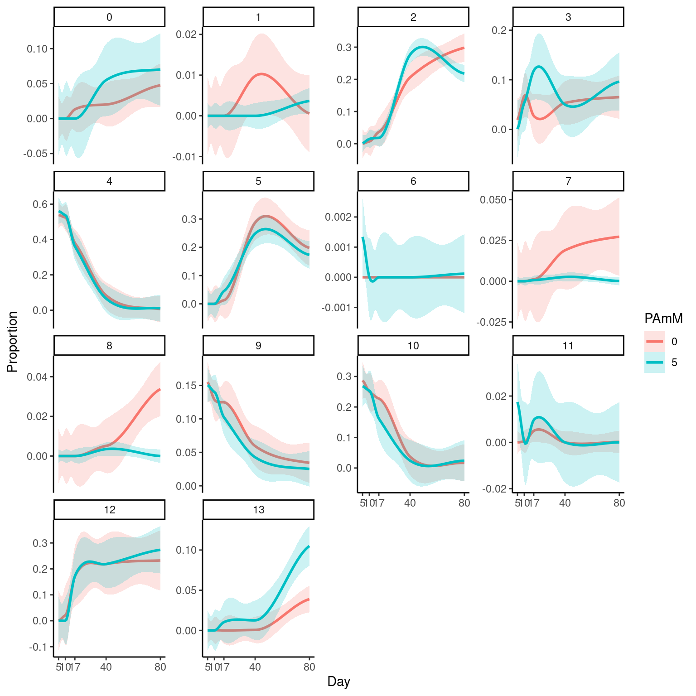

Deconvolution
A Chiocchetti
2024-01-11
Last updated: 2024-01-14
Checks: 7 0
Knit directory: files/
This reproducible R Markdown analysis was created with workflowr (version 1.7.1). The Checks tab describes the reproducibility checks that were applied when the results were created. The Past versions tab lists the development history.
Great! Since the R Markdown file has been committed to the Git repository, you know the exact version of the code that produced these results.
Great job! The global environment was empty. Objects defined in the global environment can affect the analysis in your R Markdown file in unknown ways. For reproduciblity it’s best to always run the code in an empty environment.
The command set.seed(20240103) was run prior to running
the code in the R Markdown file. Setting a seed ensures that any results
that rely on randomness, e.g. subsampling or permutations, are
reproducible.
Great job! Recording the operating system, R version, and package versions is critical for reproducibility.
Nice! There were no cached chunks for this analysis, so you can be confident that you successfully produced the results during this run.
Great job! Using relative paths to the files within your workflowr project makes it easier to run your code on other machines.
Great! You are using Git for version control. Tracking code development and connecting the code version to the results is critical for reproducibility.
The results in this page were generated with repository version 65a97d3. See the Past versions tab to see a history of the changes made to the R Markdown and HTML files.
Note that you need to be careful to ensure that all relevant files for
the analysis have been committed to Git prior to generating the results
(you can use wflow_publish or
wflow_git_commit). workflowr only checks the R Markdown
file, but you know if there are other scripts or data files that it
depends on. Below is the status of the Git repository when the results
were generated:
Ignored files:
Ignored: .Rhistory
Ignored: .Rprofile
Ignored: .Rproj.user/
Ignored: output/05_Bulk_Preprocessing/
Untracked files:
Untracked: .bashrc
Untracked: .nuvolos/
Untracked: data/Bulk_dds_matrix.rds
Untracked: data/Bulkdata_Countmatrix.rds
Untracked: data/HumDev/
Untracked: data/Kanton/
Untracked: data/KantonGeneList/
Untracked: data/Knoblich/
Untracked: data/QC_data.filt.rds
Untracked: data/QC_dataClustered.filt.rds
Untracked: data/QC_dataClustered.filtTyped.rds
Untracked: data/QC_dataClustered.filtTypedTraj.rds
Untracked: data/QC_dataFinal.rds
Untracked: data/Sample Allocation P2023-224-LEX-LB.txt
Untracked: data/alldata.rds
Untracked: output/06_Bulk_DEX/06_Bulk_DEX_Siggenes_lineplots.svg
Untracked: output/07_Bulk_Deconv/
Unstaged changes:
Modified: .gitignore
Modified: output/02_Clustering/Cluster_markers.xls
Modified: output/02_Clustering/Clusters_GO_termsCluster.xlsx
Modified: output/04_Biostat/Biostat_DEG_allcells.xlsx
Modified: output/04_Biostat/Biostat_DEG_cluster_0cells.xlsx
Modified: output/04_Biostat/Biostat_DEG_cluster_10cells.xlsx
Modified: output/04_Biostat/Biostat_DEG_cluster_11cells.xlsx
Modified: output/04_Biostat/Biostat_DEG_cluster_12cells.xlsx
Modified: output/04_Biostat/Biostat_DEG_cluster_13cells.xlsx
Modified: output/04_Biostat/Biostat_DEG_cluster_1cells.xlsx
Modified: output/04_Biostat/Biostat_DEG_cluster_2cells.xlsx
Modified: output/04_Biostat/Biostat_DEG_cluster_3cells.xlsx
Modified: output/04_Biostat/Biostat_DEG_cluster_4cells.xlsx
Modified: output/04_Biostat/Biostat_DEG_cluster_5cells.xlsx
Modified: output/04_Biostat/Biostat_DEG_cluster_6cells.xlsx
Modified: output/04_Biostat/Biostat_DEG_cluster_7cells.xlsx
Modified: output/04_Biostat/Biostat_DEG_cluster_8cells.xlsx
Modified: output/04_Biostat/Biostat_DEG_cluster_9cells.xlsx
Modified: output/04_Biostat/Biostat_GO_termDEG_all.xlsx
Modified: output/04_Biostat/Biostat_GO_termDEG_cluster_0.xlsx
Modified: output/04_Biostat/Biostat_GO_termDEG_cluster_1.xlsx
Modified: output/04_Biostat/Biostat_GO_termDEG_cluster_10.xlsx
Modified: output/04_Biostat/Biostat_GO_termDEG_cluster_11.xlsx
Modified: output/04_Biostat/Biostat_GO_termDEG_cluster_12.xlsx
Modified: output/04_Biostat/Biostat_GO_termDEG_cluster_13.xlsx
Modified: output/04_Biostat/Biostat_GO_termDEG_cluster_2.xlsx
Modified: output/04_Biostat/Biostat_GO_termDEG_cluster_3.xlsx
Modified: output/04_Biostat/Biostat_GO_termDEG_cluster_4.xlsx
Modified: output/04_Biostat/Biostat_GO_termDEG_cluster_5.xlsx
Modified: output/04_Biostat/Biostat_GO_termDEG_cluster_6.xlsx
Modified: output/04_Biostat/Biostat_GO_termDEG_cluster_7.xlsx
Modified: output/04_Biostat/Biostat_GO_termDEG_cluster_8.xlsx
Modified: output/04_Biostat/Biostat_GO_termDEG_cluster_9.xlsx
Modified: output/04_Biostat/Biostat_HumdevCTFreq.xslsx
Modified: output/04_Biostat/Biostat_clusterFreq.xslsx
Modified: output/06_Bulk_DEX/06_Bulk_DEX_GO_results.xlsx
Modified: output/06_Bulk_DEX/06_Bulk_DEX_LFC_results.xlsx
Modified: output/06_Bulk_DEX/06_Bulk_DEX_Siggenes_boxplots.pdf
Modified: output/06_Bulk_DEX/06_Bulk_DEX_top10_BP_GOplot.svg
Modified: output/06_Bulk_DEX/06_Bulk_DEX_top10_TF_GOplot.svg
Modified: output/06_Bulk_DEX/06_Bulk_DEX_top10all_GOplot.svg
Modified: workflowHelper.R
Note that any generated files, e.g. HTML, png, CSS, etc., are not included in this status report because it is ok for generated content to have uncommitted changes.
These are the previous versions of the repository in which changes were
made to the R Markdown (analysis/07_DeconVol_Bulk.Rmd) and
HTML (docs/07_DeconVol_Bulk.html) files. If you’ve
configured a remote Git repository (see ?wflow_git_remote),
click on the hyperlinks in the table below to view the files as they
were in that past version.
| File | Version | Author | Date | Message |
|---|---|---|---|---|
| html | 603779a | Andreas Chiocchetti | 2024-01-13 | Build site. |
| html | 27e5187 | Andreas Chiocchetti | 2024-01-13 | Build site. |
| html | e02ebd0 | Andreas Chiocchetti | 2024-01-12 | Build site. |
| Rmd | fffce57 | Andreas Chiocchetti | 2024-01-12 | wflow_publish("./analysis/07_DeconVol_Bulk.Rmd") |
| html | 7fc08ed | Andreas Chiocchetti | 2024-01-12 | Build site. |
| Rmd | b7f110a | Andreas Chiocchetti | 2024-01-12 | wflow_publish("./analysis/07_DeconVol_Bulk.Rmd") |
| html | 472919f | Andreas Chiocchetti | 2024-01-12 | Build site. |
| Rmd | f7ee227 | Andreas Chiocchetti | 2024-01-11 | wflow_publish(c("./analysis/.Rmd", "./code/", "./docs/*")) |
library(SingleR)Loading required package: SummarizedExperimentLoading required package: MatrixGenericsLoading required package: matrixStats
Attaching package: 'MatrixGenerics'The following objects are masked from 'package:matrixStats':
colAlls, colAnyNAs, colAnys, colAvgsPerRowSet, colCollapse,
colCounts, colCummaxs, colCummins, colCumprods, colCumsums,
colDiffs, colIQRDiffs, colIQRs, colLogSumExps, colMadDiffs,
colMads, colMaxs, colMeans2, colMedians, colMins, colOrderStats,
colProds, colQuantiles, colRanges, colRanks, colSdDiffs, colSds,
colSums2, colTabulates, colVarDiffs, colVars, colWeightedMads,
colWeightedMeans, colWeightedMedians, colWeightedSds,
colWeightedVars, rowAlls, rowAnyNAs, rowAnys, rowAvgsPerColSet,
rowCollapse, rowCounts, rowCummaxs, rowCummins, rowCumprods,
rowCumsums, rowDiffs, rowIQRDiffs, rowIQRs, rowLogSumExps,
rowMadDiffs, rowMads, rowMaxs, rowMeans2, rowMedians, rowMins,
rowOrderStats, rowProds, rowQuantiles, rowRanges, rowRanks,
rowSdDiffs, rowSds, rowSums2, rowTabulates, rowVarDiffs, rowVars,
rowWeightedMads, rowWeightedMeans, rowWeightedMedians,
rowWeightedSds, rowWeightedVarsLoading required package: GenomicRangesLoading required package: stats4Loading required package: BiocGenerics
Attaching package: 'BiocGenerics'The following objects are masked from 'package:stats':
IQR, mad, sd, var, xtabsThe following objects are masked from 'package:base':
anyDuplicated, aperm, append, as.data.frame, basename, cbind,
colnames, dirname, do.call, duplicated, eval, evalq, Filter, Find,
get, grep, grepl, intersect, is.unsorted, lapply, Map, mapply,
match, mget, order, paste, pmax, pmax.int, pmin, pmin.int,
Position, rank, rbind, Reduce, rownames, sapply, setdiff, sort,
table, tapply, union, unique, unsplit, which.max, which.minLoading required package: S4Vectors
Attaching package: 'S4Vectors'The following object is masked from 'package:utils':
findMatchesThe following objects are masked from 'package:base':
expand.grid, I, unnameLoading required package: IRangesLoading required package: GenomeInfoDbLoading required package: BiobaseWelcome to Bioconductor
Vignettes contain introductory material; view with
'browseVignettes()'. To cite Bioconductor, see
'citation("Biobase")', and for packages 'citation("pkgname")'.
Attaching package: 'Biobase'The following object is masked from 'package:MatrixGenerics':
rowMediansThe following objects are masked from 'package:matrixStats':
anyMissing, rowMedianslibrary(DropletUtils)Loading required package: SingleCellExperimentWarning: no function found corresponding to methods exports from 'HDF5Array'
for: 'extract_sparse_array'Warning: multiple methods tables found for 'sparsity'library(SingleCellExperiment)
library(Seurat)Loading required package: SeuratObjectLoading required package: sp
Attaching package: 'sp'The following object is masked from 'package:IRanges':
%over%'SeuratObject' was built under R 4.3.0 but the current version is
4.3.1; it is recomended that you reinstall 'SeuratObject' as the ABI
for R may have changed'SeuratObject' was built with package 'Matrix' 1.6.3 but the current
version is 1.6.4; it is recomended that you reinstall 'SeuratObject' as
the ABI for 'Matrix' may have changed
Attaching package: 'SeuratObject'The following object is masked from 'package:SummarizedExperiment':
AssaysThe following object is masked from 'package:GenomicRanges':
intersectThe following object is masked from 'package:GenomeInfoDb':
intersectThe following object is masked from 'package:IRanges':
intersectThe following object is masked from 'package:S4Vectors':
intersectThe following object is masked from 'package:BiocGenerics':
intersectThe following object is masked from 'package:base':
intersect
Attaching package: 'Seurat'The following object is masked from 'package:SummarizedExperiment':
Assayslibrary(slingshot)Loading required package: princurveLoading required package: TrajectoryUtilslibrary(gprofiler2)
library(tidyverse)── Attaching core tidyverse packages ──────────────────────── tidyverse 2.0.0 ──
✔ dplyr 1.1.4 ✔ readr 2.1.4
✔ forcats 1.0.0 ✔ stringr 1.5.1
✔ ggplot2 3.4.4 ✔ tibble 3.2.1
✔ lubridate 1.9.3 ✔ tidyr 1.3.0
✔ purrr 1.0.2 ── Conflicts ────────────────────────────────────────── tidyverse_conflicts() ──
✖ lubridate::%within%() masks IRanges::%within%()
✖ dplyr::collapse() masks IRanges::collapse()
✖ dplyr::combine() masks Biobase::combine(), BiocGenerics::combine()
✖ dplyr::count() masks matrixStats::count()
✖ dplyr::desc() masks IRanges::desc()
✖ tidyr::expand() masks S4Vectors::expand()
✖ dplyr::filter() masks stats::filter()
✖ dplyr::first() masks S4Vectors::first()
✖ dplyr::lag() masks stats::lag()
✖ ggplot2::Position() masks BiocGenerics::Position(), base::Position()
✖ purrr::reduce() masks GenomicRanges::reduce(), IRanges::reduce()
✖ dplyr::rename() masks S4Vectors::rename()
✖ lubridate::second() masks S4Vectors::second()
✖ lubridate::second<-() masks S4Vectors::second<-()
✖ dplyr::slice() masks IRanges::slice()
ℹ Use the conflicted package (<http://conflicted.r-lib.org/>) to force all conflicts to become errorslibrary(MuSiC)Loading required package: nnls
Loading required package: TOAST
Loading required package: EpiDISH
Loading required package: limma
Attaching package: 'limma'
The following object is masked from 'package:BiocGenerics':
plotMA
Loading required package: quadprog
Registered S3 method overwritten by 'GGally':
method from
+.gg ggplot2
MuSiC v1.0.0 support SingleCellExperiment! See Tutorial: https://xuranw.github.io/MuSiC/articles/MuSiC.html
MuSiC2 for multi-condition bulk RNA-seq data is also available!library(ggstream)options(stringsAsFactors = F)
set.seed(157434538)
reanalyze=F
cutoff = 0.05 # pavalue cutoff for DEG
padj_cu=FALSE # use adjusted pvalue
Dark8 = RColorBrewer::brewer.pal(8, "Dark2")output= paste0("output/07_Bulk_Deconv/")
dir.create(output, showWarnings = F)
source("code/custom_functions.R")Loading required package: kableExtra
Attaching package: 'kableExtra'The following object is masked from 'package:dplyr':
group_rowsLoading required package: compareGroupsLoading required package: RColorBrewerLoading required package: pheatmapLoading required package: DESeq2ddsMat <- readRDS("data/Bulk_dds_matrix.rds")
SampleInfo = as.data.frame(colData(ddsMat))
log_2cpm=log2(counts(ddsMat, normalize=T)+1)
SamplePalette = c("#000000","#3399FF")
seurat_integrated <- readRDS("./data/QC_dataClustered.filtTypedTraj.rds")
sce.RNA <- as.SingleCellExperiment(seurat_integrated)
metadata<- seurat_integrated@meta.databulk.mtx = counts(ddsMat)
bulk.meta = colData(ddsMat)
bulk.gene = rowData(ddsMat)
rownames(bulk.mtx) = bulk.gene$hgnc[match(rownames(bulk.mtx), bulk.gene$entrez_gene)]
genes = intersect(rownames(sce.RNA), bulk.gene$hgnc)
bulk.mtx=bulk.mtx[genes, ]
sce.RNA <- sce.RNA[genes,]
Est.prop.bulk = music_prop(bulk.mtx = bulk.mtx, sc.sce = sce.RNA,
clusters = 'seurat_clusters',
samples = 'orig.ident', verbose = F)
prop.matrix = t(data.matrix(Est.prop.bulk$Est.prop.allgene))proportion organoid clusters (our experiment)
longitudinal trajectories of proportions
long_prop_matrix <-reshape2::melt(prop.matrix)
colnames(long_prop_matrix) <-c("Cluster", "Sample", "Proportion")
metadata_bulk <- as.data.frame(colData(ddsMat))
long_prop_matrix <- cbind(long_prop_matrix,metadata_bulk[long_prop_matrix$Sample,])
p<-ggplot(long_prop_matrix, aes(x=Day, y=Proportion, col=PAmM, fill=PAmM))+
geom_smooth(method = "loess", alpha = 0.2)+facet_wrap(~Cluster)+theme_classic()
p`geom_smooth()` using formula = 'y ~ x'
ggsave(paste0(output, "07_DeconVol_Bulk_timeplots_clusters.svg"), p)Saving 8 x 8 in image
`geom_smooth()` using formula = 'y ~ x'testing of time differences per cluster
library(lme4)Loading required package: Matrix
Attaching package: 'Matrix'The following objects are masked from 'package:tidyr':
expand, pack, unpackThe following object is masked from 'package:S4Vectors':
expandclustervar = "Cluster"
lmatrix = long_prop_matrix
test_time_by_PA = function(lmatrix, clustervar){
reslist=list()
for(cl in unique(lmatrix[,clustervar])){
dataset = lmatrix[lmatrix[,clustervar]==cl, ]
if(var(dataset$Proportion) != 0){
lmres=lmer(Proportion~poly(Day,2)*PAmM+(1|Batch), data = dataset)
res = car::Anova(lmres, type=3)%>% as.data.frame()
colnames(res) <- c("Chisq", "df", "pvalue")
reslist[[as.character(cl)]] <- res
} else {
reslist[[as.character(cl)]] <- data.frame("pvalue"=rep("no var",4))
}
}
return(reslist)
}
testres = test_time_by_PA(lmatrix = long_prop_matrix, clustervar = "Cluster")boundary (singular) fit: see help('isSingular')boundary (singular) fit: see help('isSingular')pvals=lapply(testres, function(x){x[4,"pvalue"]})
Significances = data.frame(cluster = names(pvals), p.value = unlist(pvals,recursive = F))
Significances cluster p.value
5 5 0.443625374639893
9 9 0.0472236983847623
8 8 no var
1 1 no var
0 0 no var
3 3 0.875283132166054
4 4 0.737247216506133
7 7 no var
6 6 0.400655510295367
2 2 0.0010919890872763
12 12 0.865579580390124
11 11 no var
10 10 0.861744364765872
13 13 5.23788758476045e-06openxlsx2::write_xlsx(Significances, paste0(output,"07_DeconVol_Bulk_StatTimecourseDiff_clusters.xslx"))col=viridis::viridis(100)
svg(paste0(output, "07_DeconVol_Bulk_propHeatmap_clusters.svg"))
gplots::heatmap.2(prop.matrix, margins = c(12,5), main = "organoid clusters",
Colv = F, trace = "none", density.info = "none", col = col, key.title = "prop", key.xlab = "proportion", key.par = list(mar=c(5,2,5,2)))Warning in gplots::heatmap.2(prop.matrix, margins = c(12, 5), main = "organoid
clusters", : Discrepancy: Colv is FALSE, while dendrogram is `both'. Omitting
column dendogram.dev.off()png
2 gplots::heatmap.2(prop.matrix, margins = c(12,5), main = "organoid clusters",
Colv = F, trace = "none", density.info = "none", col = col, key.title = "prop", key.xlab = "proportion", key.par = list(mar=c(5,2,5,2)))Warning in gplots::heatmap.2(prop.matrix, margins = c(12, 5), main = "organoid
clusters", : Discrepancy: Colv is FALSE, while dendrogram is `both'. Omitting
column dendogram.
proportion knoblich cell types
sceRNAknoblich <- readRDS("data/Knoblich/CHOOSE_ASD_Modules.rds")
Idents(sceRNAknoblich) <- "celltype_cl_coarse"
sceRNAknoblich <- subset(sceRNAknoblich, cells = WhichCells(sceRNAknoblich, downsample = 200))
sceRNAknoblich<- as.SingleCellExperiment(sceRNAknoblich)
Est.prop.bulk.knblich = music_prop(bulk.mtx = bulk.mtx, sc.sce = sceRNAknoblich,
clusters = 'celltype_cl_coarse',
samples = 'orig.ident', verbose = F)
prop.matrix.knblich = t(data.matrix(Est.prop.bulk.knblich$Est.prop.allgene))trajectories of proportions
long_prop_matrix <-reshape2::melt(prop.matrix.knblich)
colnames(long_prop_matrix) <-c("Kn.Cluster", "Sample", "Proportion")
metadata_bulk <- as.data.frame(colData(ddsMat))
long_prop_matrix <- cbind(long_prop_matrix,metadata_bulk[long_prop_matrix$Sample,])
p<-ggplot(long_prop_matrix, aes(x=Day, y=Proportion, col=PAmM, fill=PAmM))+
geom_smooth(method = "loess", alpha = 0.2)+facet_wrap(~Kn.Cluster)+theme_classic()
p`geom_smooth()` using formula = 'y ~ x'
ggsave(paste0(output, "07_DeconVol_Bulk_timeplots_Knoblichclusters.svg"), p)Saving 7 x 5 in image
`geom_smooth()` using formula = 'y ~ x'testing of time differences per cluster
testres = test_time_by_PA(lmatrix = long_prop_matrix, clustervar = "Kn.Cluster")boundary (singular) fit: see help('isSingular')
boundary (singular) fit: see help('isSingular')pvals=lapply(testres, function(x){x[4,"pvalue"]})
Significances = data.frame(cluster = names(pvals), p.value = unlist(pvals,recursive = F))
Significances cluster p.value
oRG oRG no var
L23 L23 no var
INP INP no var
CGE_LGE_IN CGE_LGE_IN no var
LGE_IN LGE_IN no var
L6_CThPN L6_CThPN 0.578010574658149
ccRG ccRG 0.893438324788172
IP IP 0.892557972215078
RG RG no var
ccvRG ccvRG 0.621800990553103
Astrocytes Astrocytes 0.270534861998907
L56 L56 0.130146259243014
vRG vRG no var
CGE_IN CGE_IN 0.924070944586973
L4 L4 no var
mesenchyme mesenchyme 0.458066792449976openxlsx2::write_xlsx(Significances, paste0(output,"07_DeconVol_Bulk_StatTimecourseDiff_KnCelltypes.xslx"))svg(paste0(output, "07_DeconVol_Bulk_propHeatmap_Knoblichclusters.svg"))
gplots::heatmap.2(prop.matrix.knblich, scale = "col",
margins = c(12,5), main = "knoblich clusters",
Colv = F, trace = "none", density.info = "none", col = col, key.title = "prop", key.xlab = "proportion", key.par = list(mar=c(5,2,5,2)))Warning in gplots::heatmap.2(prop.matrix.knblich, scale = "col", margins =
c(12, : Discrepancy: Colv is FALSE, while dendrogram is `both'. Omitting column
dendogram.dev.off()png
2 gplots::heatmap.2(prop.matrix.knblich, scale = "col",
margins = c(12,5), main = "knoblich clusters",
Colv = F, trace = "none", density.info = "none", col = col, key.title = "prop", key.xlab = "proportion", key.par = list(mar=c(5,2,5,2)))Warning in gplots::heatmap.2(prop.matrix.knblich, scale = "col", margins =
c(12, : Discrepancy: Colv is FALSE, while dendrogram is `both'. Omitting column
dendogram.
sessionInfo()R version 4.3.1 (2023-06-16)
Platform: x86_64-pc-linux-gnu (64-bit)
Running under: Ubuntu 22.04.2 LTS
Matrix products: default
BLAS: /usr/lib/x86_64-linux-gnu/openblas-pthread/libblas.so.3
LAPACK: /usr/lib/x86_64-linux-gnu/openblas-pthread/libopenblasp-r0.3.20.so; LAPACK version 3.10.0
locale:
[1] LC_CTYPE=en_US.UTF-8 LC_NUMERIC=C
[3] LC_TIME=en_US.UTF-8 LC_COLLATE=en_US.UTF-8
[5] LC_MONETARY=en_US.UTF-8 LC_MESSAGES=en_US.UTF-8
[7] LC_PAPER=en_US.UTF-8 LC_NAME=C
[9] LC_ADDRESS=C LC_TELEPHONE=C
[11] LC_MEASUREMENT=en_US.UTF-8 LC_IDENTIFICATION=C
time zone: Etc/UTC
tzcode source: system (glibc)
attached base packages:
[1] stats4 stats graphics grDevices utils datasets methods
[8] base
other attached packages:
[1] lme4_1.1-35.1 Matrix_1.6-4
[3] DESeq2_1.40.2 pheatmap_1.0.12
[5] RColorBrewer_1.1-3 compareGroups_4.7.2
[7] kableExtra_1.3.4 ggstream_0.1.0
[9] MuSiC_1.0.0 TOAST_1.14.0
[11] quadprog_1.5-8 limma_3.56.2
[13] EpiDISH_2.16.0 nnls_1.5
[15] lubridate_1.9.3 forcats_1.0.0
[17] stringr_1.5.1 dplyr_1.1.4
[19] purrr_1.0.2 readr_2.1.4
[21] tidyr_1.3.0 tibble_3.2.1
[23] ggplot2_3.4.4 tidyverse_2.0.0
[25] gprofiler2_0.2.2 slingshot_2.8.0
[27] TrajectoryUtils_1.8.0 princurve_2.1.6
[29] Seurat_5.0.1 SeuratObject_5.0.1
[31] sp_2.1-2 DropletUtils_1.20.0
[33] SingleCellExperiment_1.24.0 SingleR_2.2.0
[35] SummarizedExperiment_1.32.0 Biobase_2.62.0
[37] GenomicRanges_1.54.1 GenomeInfoDb_1.38.1
[39] IRanges_2.36.0 S4Vectors_0.40.2
[41] BiocGenerics_0.48.1 MatrixGenerics_1.14.0
[43] matrixStats_1.1.0 workflowr_1.7.1
loaded via a namespace (and not attached):
[1] R.methodsS3_1.8.2 nnet_7.3-19
[3] locfdr_1.1-8 goftest_1.2-3
[5] HDF5Array_1.28.1 vctrs_0.6.5
[7] spatstat.random_3.2-2 digest_0.6.33
[9] png_0.1-8 corpcor_1.6.10
[11] shape_1.4.6 MCMCpack_1.6-3
[13] proxy_0.4-27 git2r_0.33.0
[15] ggrepel_0.9.4 httpcode_0.3.0
[17] deldir_2.0-2 parallelly_1.36.0
[19] fontLiberation_0.1.0 MASS_7.3-60
[21] reshape2_1.4.4 httpuv_1.6.13
[23] foreach_1.5.2 withr_2.5.2
[25] xfun_0.41 ellipsis_0.3.2
[27] survival_3.5-7 crul_1.4.0
[29] MatrixModels_0.5-3 systemfonts_1.0.5
[31] gtools_3.9.5 ragg_1.2.7
[33] zoo_1.8-12 pbapply_1.7-2
[35] R.oo_1.25.0 GGally_2.2.0
[37] promises_1.2.1 httr_1.4.7
[39] globals_0.16.2 fitdistrplus_1.1-11
[41] rhdf5filters_1.12.1 ps_1.7.5
[43] rhdf5_2.44.0 rstudioapi_0.15.0
[45] pan_1.9 miniUI_0.1.1.1
[47] generics_0.1.3 processx_3.8.3
[49] curl_5.2.0 zlibbioc_1.48.0
[51] ScaledMatrix_1.8.1 polyclip_1.10-6
[53] GenomeInfoDbData_1.2.11 SparseArray_1.2.2
[55] xtable_1.8-4 doParallel_1.0.17
[57] evaluate_0.23 S4Arrays_1.2.0
[59] hms_1.1.3 glmnet_4.1-8
[61] irlba_2.3.5.1 colorspace_2.1-0
[63] ROCR_1.0-11 reticulate_1.34.0
[65] spatstat.data_3.0-3 magrittr_2.0.3
[67] lmtest_0.9-40 viridis_0.6.4
[69] later_1.3.2 lattice_0.22-5
[71] spatstat.geom_3.2-7 future.apply_1.11.1
[73] SparseM_1.81 getPass_0.2-4
[75] scattermore_1.2 scuttle_1.10.3
[77] cowplot_1.1.2 RcppAnnoy_0.0.21
[79] class_7.3-22 pillar_1.9.0
[81] nlme_3.1-164 iterators_1.0.14
[83] caTools_1.18.2 compiler_4.3.1
[85] beachmat_2.16.0 RSpectra_0.16-1
[87] stringi_1.8.3 jomo_2.7-6
[89] tensor_1.5 minqa_1.2.6
[91] plyr_1.8.9 crayon_1.5.2
[93] abind_1.4-5 truncnorm_1.0-9
[95] chron_2.3-61 locfit_1.5-9.8
[97] whisker_0.4.1 codetools_0.2-19
[99] textshaping_0.3.7 BiocSingular_1.16.0
[101] openssl_2.1.1 flextable_0.9.4
[103] bslib_0.6.1 e1071_1.7-14
[105] plotly_4.10.3 mime_0.12
[107] splines_4.3.1 Rcpp_1.0.11
[109] fastDummies_1.7.3 quantreg_5.97
[111] sparseMatrixStats_1.12.2 knitr_1.45
[113] utf8_1.2.4 fs_1.6.3
[115] listenv_0.9.0 DelayedMatrixStats_1.22.6
[117] callr_3.7.3 tzdb_0.4.0
[119] svglite_2.1.3 pkgconfig_2.0.3
[121] tools_4.3.1 cachem_1.0.8
[123] viridisLite_0.4.2 rvest_1.0.3
[125] fastmap_1.1.1 rmarkdown_2.25
[127] scales_1.3.0 grid_4.3.1
[129] ica_1.0-3 broom_1.0.5
[131] sass_0.4.8 officer_0.6.3
[133] patchwork_1.2.0 coda_0.19-4
[135] ggstats_0.5.1 dotCall64_1.1-1
[137] carData_3.0-5 RANN_2.6.1
[139] rpart_4.1.23 farver_2.1.1
[141] mgcv_1.9-1 yaml_2.3.8
[143] cli_3.6.2 writexl_1.4.2
[145] webshot_0.5.5 leiden_0.4.3.1
[147] lifecycle_1.0.4 askpass_1.2.0
[149] uwot_0.1.16 backports_1.4.1
[151] BiocParallel_1.34.2 timechange_0.2.0
[153] gtable_0.3.4 ggridges_0.5.5
[155] progressr_0.14.0 parallel_4.3.1
[157] jsonlite_1.8.8 edgeR_3.42.4
[159] RcppHNSW_0.5.0 mitml_0.4-5
[161] bitops_1.0-7 openxlsx2_1.2
[163] Rtsne_0.17 spatstat.utils_3.0-4
[165] zip_2.3.0 mice_3.16.0
[167] highr_0.10 jquerylib_0.1.4
[169] dqrng_0.3.2 R.utils_2.12.3
[171] lazyeval_0.2.2 shiny_1.8.0
[173] htmltools_0.5.7 sctransform_0.4.1
[175] gfonts_0.2.0 glue_1.6.2
[177] spam_2.10-0 XVector_0.42.0
[179] gdtools_0.3.5 RCurl_1.98-1.13
[181] rprojroot_2.0.4 mcmc_0.9-8
[183] Rsolnp_1.16 gridExtra_2.3
[185] boot_1.3-28.1 igraph_1.6.0
[187] R6_2.5.1 gplots_3.1.3
[189] labeling_0.4.3 cluster_2.1.6
[191] Rhdf5lib_1.22.1 nloptr_2.0.3
[193] DelayedArray_0.28.0 tidyselect_1.2.0
[195] xml2_1.3.6 car_3.1-2
[197] fontBitstreamVera_0.1.1 future_1.33.1
[199] rsvd_1.0.5 munsell_0.5.0
[201] KernSmooth_2.23-22 fontquiver_0.2.1
[203] data.table_1.14.10 htmlwidgets_1.6.4
[205] rlang_1.1.2 spatstat.sparse_3.0-3
[207] spatstat.explore_3.2-5 uuid_1.1-1
[209] HardyWeinberg_1.7.5 fansi_1.0.6